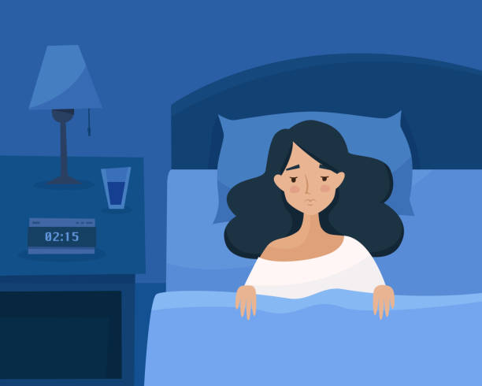

An insight of our viewpoint:
Students like us may find ourselves loaded with work and revision to do, having to attend lessons online as well as staring at a screen for 6 hours working from morning to afternoon. In addition to that, when school ends, you find yourself having a list of homework to complete for the rest of the evening. Your daily life may be filled with things that you are committed to doing and you may think of that as the main priority of the day. You may feel that A levels or GCSEs are stressful, and sure it is. But if you fill your day with just the thought of stress and work,therefore putting time for yourself aside, it becomes unhealthy and there are much better ways to approach this. If you are in this situation, it may lead to what's called “Revenge Bedtime Procrastination”.
What is “Revenge Bedtime Procrastination” ?:
If you are a student who is busy or stressed about work most of the day, you may find yourself staying up late just to get a few more hours of time for yourself to relax at the end of the day, even though you know that you should probably be sleeping. The thought of having to do this comes from the lack of control you may have to yourself during the daytime hours.
About:
I know a lot of us may be able to relate to this, including me! So don’t feel like it is just you that is experiencing this problem because a lot of us are, and it's normal, especially during the hard times of online learning. We are always constantly worried about productivity and just feel the need to take out some of our sleep time to have time for ourselves and relax without wasting any time during the day. I am guilty of doing this myself as well; I love to stay up at night to either talk to my friends, watch movies, catch up with the news, watch youtube and read. There is a sense of relaxation and satisfaction that comes with that. Although this habit makes us feel productive and allows us to have time for ourselves, this also has negative consequences as it could lead to Chronic Sleep deprivation.

Consequences: Scientists calculated that 62% of people worldwide are not getting enough sleep on a daily basis. Sleep deprivation can lead to:
- Reduced reaction time
- Problems with focus
- Brain fogs
- Weight gain
- Reduced immunity
Tips on what you can do to help you get to bed on time:
- Pace yourself Remind yourself that you are still human. Don’t expect yourself to get everything done every single day. Although there may be times that you need to work for long hours the whole day, it’s not all the time. So on a regular basis, try to pace yourself and make time for yourself during the day. Make time for yourself 10-20 minutes after you finish a piece of work. Don’t cram all “your time” into night time, but spread it out throughout the day.
- Streamline This means you prioritise only your important work that is needed to be done that particular day and take breaks during the day and take time off if you can. Set a cutoff time for work at the end of the day and ask a friend or family member to track you on your sleeping time goal.
- Be flexible Once in a while, if you want to stay up a little later,that is okay. This is not a strict schedule that you have to follow, but just make sure and be aware that you are not doing this on a regular basis.
Conclusion:
It is definitely worth trying these tips out and sticking to them because your mental health and sleep is overall more important than the unfinished work.
If you are interested to learn more about this, feel free to have a look at these websites:
SleepFoundation
BBC
VeryWellMind
Healthline